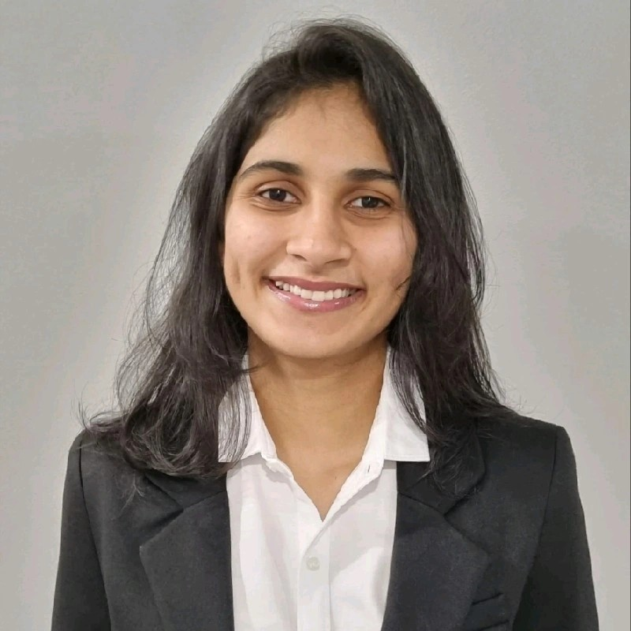

|
Siya Patil
Final-year undergraduate at the Indian Institute of Technology Gandhinagar,
majoring in Electrical Engineering with a Minor in Computer Science.
I am passionate about Machine Learning, Generative AI, and Embedded AI Systems.
I have worked on projects spanning battery chemistry prediction, document AI, semi-supervised learning, hardware acceleration, and embedded systems.
Currently serving as UG Girls Senator and Embed Club Secretary at IIT Gandhinagar.
Email /
LinkedIn /
GitHub
|

|
Education
- B.Tech. Electrical Engineering, IIT Gandhinagar (2022–Present), CGPA: 9.0
- Senior Secondary, M.P. International School, Pune (2022), 84%
- Secondary, D.A.V. Public School (2020), 96.8%
Publications
-
Battery Chemistry Recommendation using AI/ML, IEEE IAS Journal (under review), Jan–May 2025
Prof. Pallavi Bhardwaj, IIT Gandhinagar
Built TEMPEST, an AI framework with LSTMs for predicting battery internal temperature.
Achieved R² > 0.9, MAE < 0.5°C, and robust cross-chemistry generalization.
[GitHub]
Work Experience
-
AI Solutions Intern, Forvia Hella (May–Jul 2025)
Developed a Generative AI agent using GPT-4.1 Azure + AI Vision OCR to extract homologation certificate data.
Achieved 97% accuracy, 120+ hours saved annually.
[GitHub]
Internships
-
Label Propagation for Semi-Supervised Learning, IIT Kanpur (Apr–Jul 2024)
Prof. Vipul Arora – Reached 81% F1 using graph-based SSL on Indian ragas.
[GitHub]
-
LayerFusion++, IIT Gandhinagar (Dec 2024–Mar 2025)
Prof. Joycee Mekie – Accelerated workloads with HBM-aware fusion; 25–45% efficiency gain.
Selected Projects
-
iVIS: Intelligent Vehicle Identification System (Mar–Apr 2025)
STM32-based system for license plate recognition + automated barrier control.
[GitHub]
-
Genomics Analysis Acceleration (Dec 2023–Apr 2024)
Hardware-software co-design with FPGA + Python for scalable bioinformatics.
[GitHub]
-
Human Activity Recognition (Jan–Apr 2024)
Classified 6 activities using UCI-HAR dataset with Decision Trees.
[GitHub]
Skills
- Programming: Python, C, C++
- Frameworks/Tools: PyTorch, TensorFlow, OpenCV, MATLAB, Git, Dash, Pydantic, Azure AI
- Domains: Generative AI, CNNs, RAG, Embedded AI Systems
Relevant Courses
- Machine Learning, Deep Learning, Data Structures, Probability & Statistics
- Signal Systems, Control Systems, Digital Signal Processing
- Data-Centric Computing, Linear Algebra, Differential Equations
Positions of Responsibility
- Teaching Assistant: Digital Systems, IIT Gandhinagar (Jan ’25 – Present)
- UG Girls Senator: IIT Gandhinagar (Apr ’25 – Present)
- Secretary: Embed Club, IIT Gandhinagar (Jul ’25 – Present)
Achievements
- Branch Rank 4, Electrical Engineering, IITGN
- Dean’s List (Sem 1 & 2)
- Academic Citation (Sem 6)
- AIR 7, Aarohan 2021 (BITS Pilani)
- JEE Advanced 2022 – Branch Opener (Electrical Engg., IITGN, Girls)
|